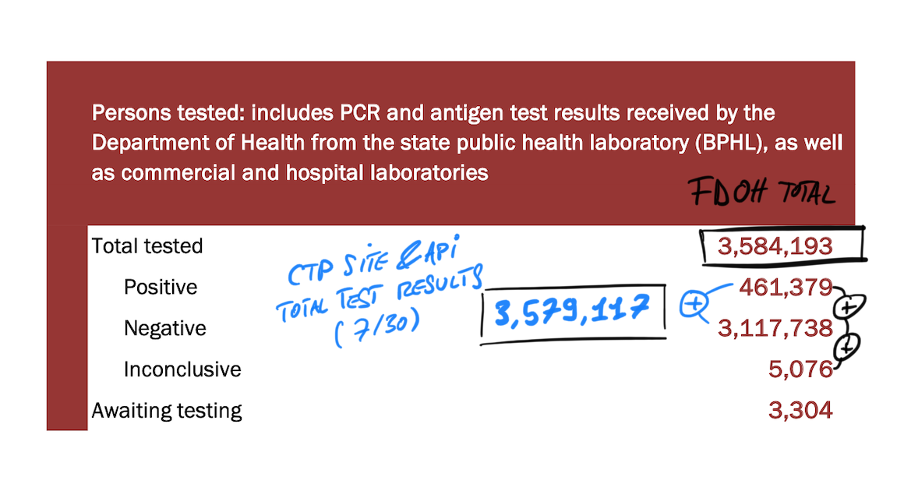

[Data Quality] Move pos+neg to calculate totals from website to data entry column
Issue number 664
karaschechtman opened this issue on July 23, 2020 at 3:54 pm
Labels Data quality not stale Meta
Target Date: 08/01 Overview: Create a column for total tests and use that to fill in the website total tests columns with the same pos+neg value as before. This will move ownership of the total tests calculation to Data Entry rather than the API/website. Contribution to milestone: This will allow us to release phased changes to the total tests, by modifying the column. Other benefits: Future flexibility with what we expose as total tests as this landscape continues to evolve and we learn more through reaching out to states Potential challenges: Ensuring the new column exactly matches what is on the website currently Editorial: None for this issue, since it will not cause any changes in our values
Note: we are discussing this on Slack here.
- [x] Add a column Total Test Results to States Daily that we will use for our preferred totals metric in each state
- [ ] Replicate website logic to get exact same values as are currently on website in that column with pos+neg
- [ ] Expose the column in the public sheet
- [ ] Change the API to look at this column rather than making the calculation
Comments
Potential challenges: Ensuring the new column exactly matches what is on the website currently
I don’t think it’s possible for those to match unless we start backfilling inconclusive data for states like Florida where the daily delta between persons tested includes Positive + Negative + Inconclusive but not Pending (Awaiting testing):

Reconciling which states include pending tests in their total persons tested reported sounds like a nightmare but obviously our data definitions can and should differ from individual states when appropriate so in my mind the total tests reported by a state and submitted through data entry should definitely be different when appropriate with total tests as defined by CTP.
I’d consider this a feature.
HI @olivierlacan I think you misread this “Ensuring the new column exactly matches what is on the website currently” - this is an interim step and the goal here is simply to match the numbers currently on the website, not to do any kind of other calculation. The goal is to move as soon as possible to just reporting the total test results that the states report, this is just required on the way to that goal due to implementation details.
Disclaimer: I did not look at the photo you posted and just skimmed your answer because I am working on something else… sorry.
Closing. We are going to keep this calculation in the API for now
This has a lot of overlap with #578